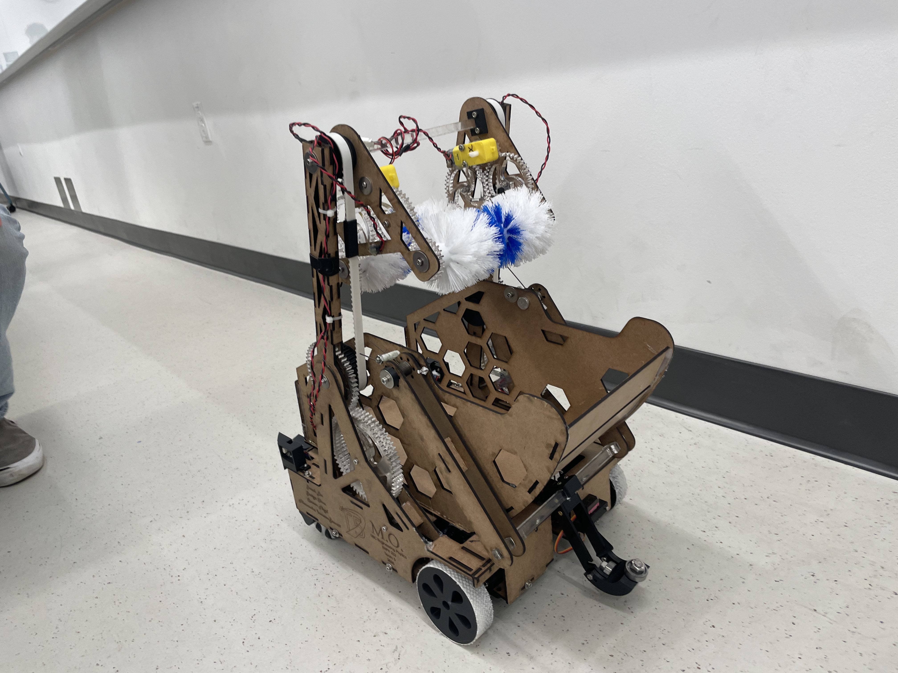
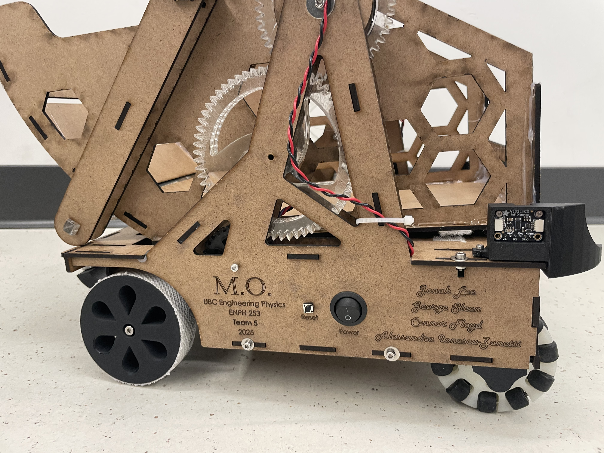
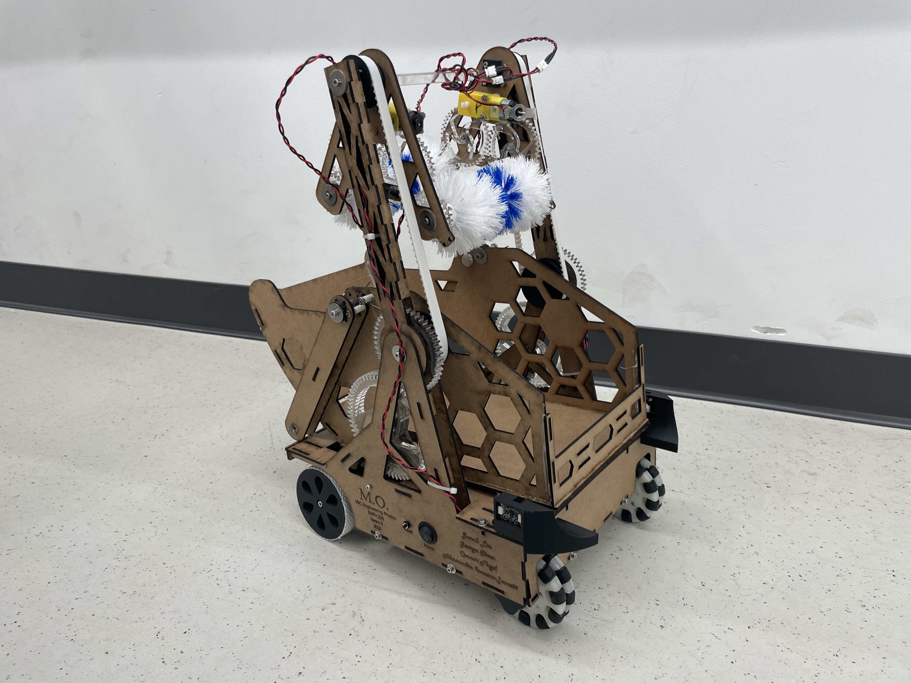
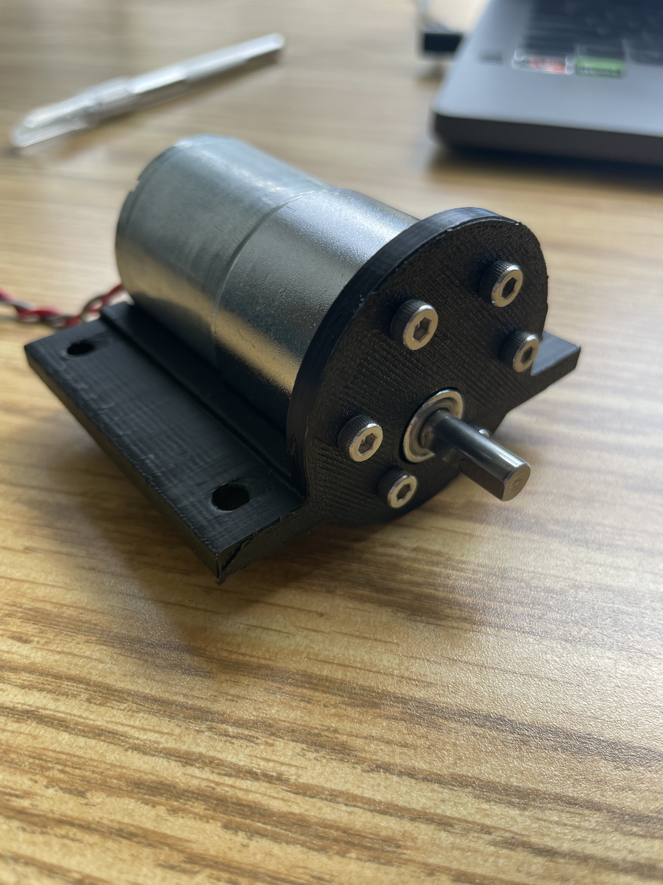
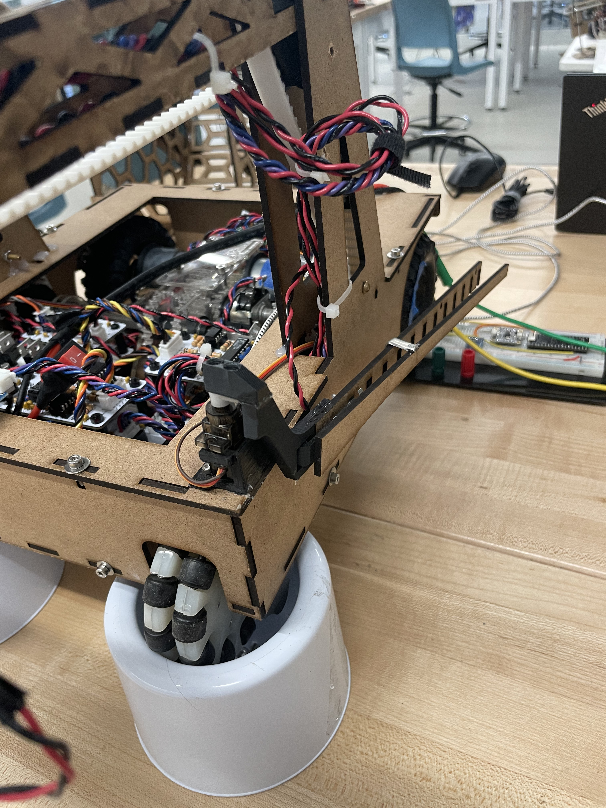
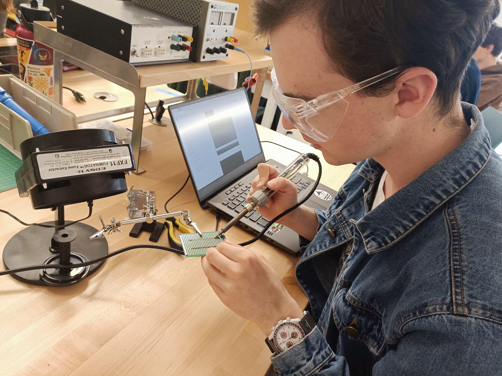
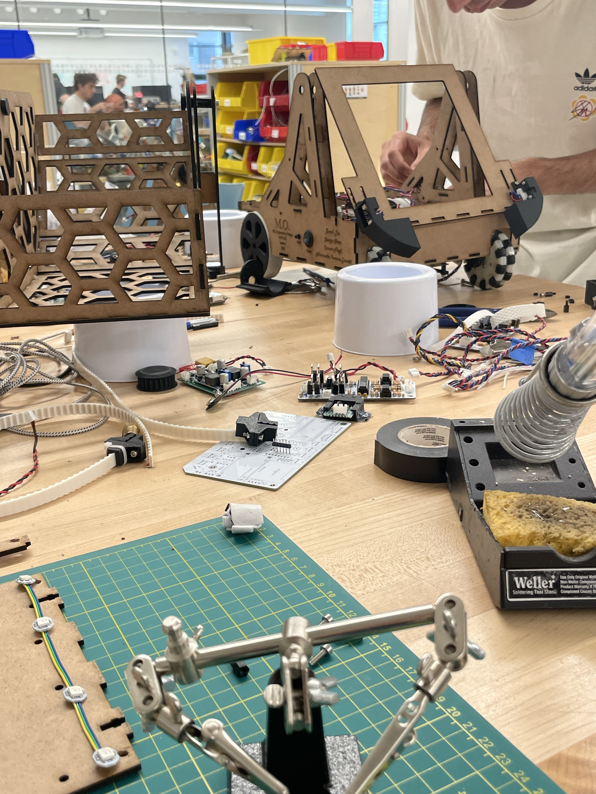
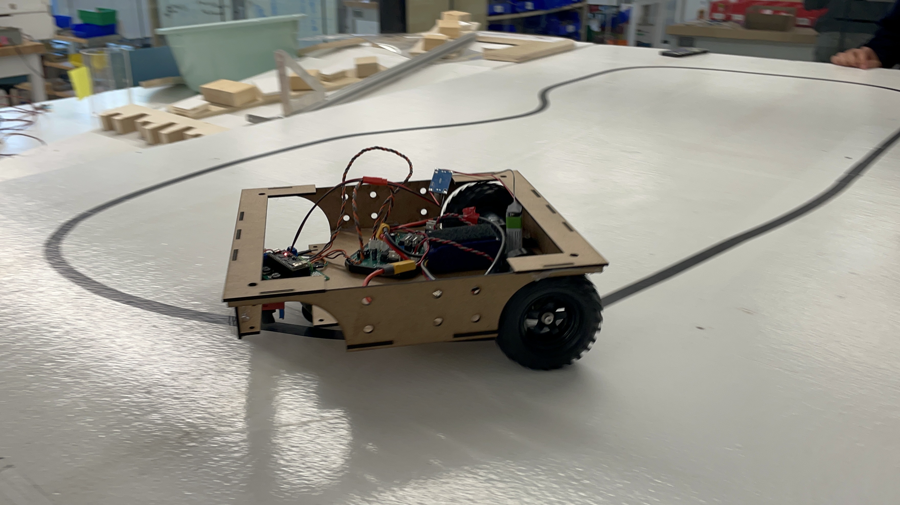
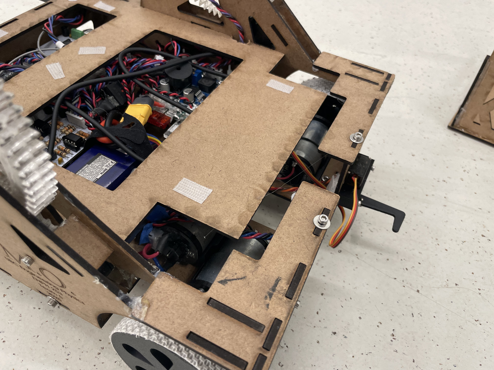
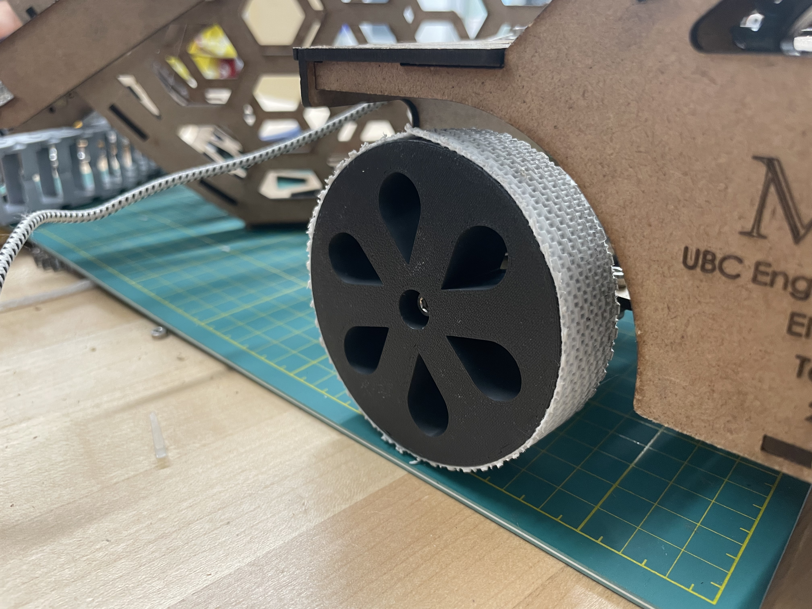

'M.O.' - Autonomous Pet Retrieval
UNDER CONSTRUCTION
Overview
ENPH 253, colloquially known as 'Robot Summer' is all about bringing a robot to life in the span of six weeks.
This year's challenge was to rescue seven pets (stuffies) from a burning building (obstacle course) and return them to safety. Our robot needed to be able to do this completely autonomously.
Our robot 'M.O.' (named after the cleaning robot in Wall-E) used LiDAR to detect pets, toilet brushes to grab them, and a basket that attached to the zipline to return them to safety.
I was the electrical lead on the team, designing most circuits for our robot, as well as a contributor to much of the control firmware.
Electrical Contributions
- Designed the h-bridge for electrical control of our drive system
- Managed PCB design, assembly, and troubleshooting
- Designed around limited pin constraints of an ESP32 with multiplexing and multi-drop buses
Firmware contributions
- Solved concurrent access to I2C buses with freeRTOS
- Implemented PID control to close the control loop on all motors
- Managed codebase complexity by ensuring adequate documentation in all code
GitHub Organization
Media
Final Robot



Electronics & Assembly







Trials & Demos